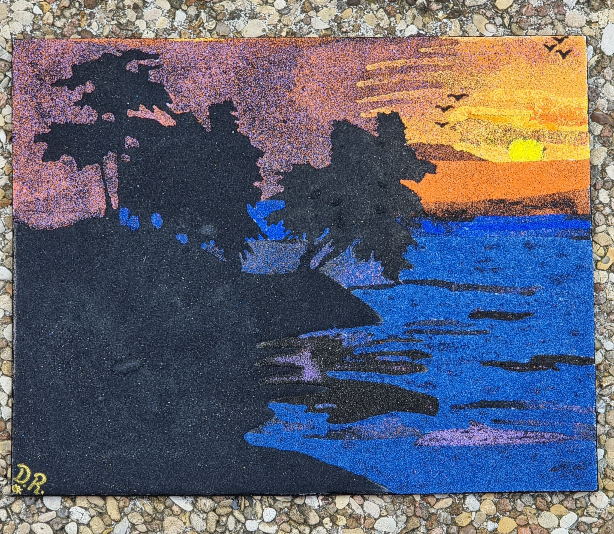

Coucher de soleil 1
12 Décembre 2022
Premier tableau de reprise après des années.
Représente un coucher de soleil, admiré de loin.
Il n'y a que du sable sur cette toile.
Ma signature D.R se trouve en bas, à gauche du tableau.
Dimension : 24cm de hauteur, 30cm de largeur